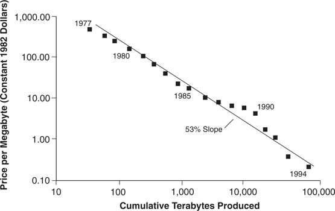

My investigation into why leading firms found it so difficult to stay atop the disk drive industry led me to develop the “technology mudslide hypothesis”: Coping with the relentless onslaught of technology change was akin to trying to climb a mudslide raging down a hill. You have to scramble with everything you’ve got to stay on top of it, and if you ever once stop to catch your breath, you get buried.
Figure 1.3 Disk Drive Price Experience Curve

Source: Data are from various issues of Disk/Trend Report.
To test this hypothesis, I assembled and analyzed a database consisting of the technical and performance specifications of every model of disk drive introduced by every company in the world disk drive industry for each of the years between 1975 and 1994. 2 This database enabled me to identify the firms that led in introducing each new technology; to trace how new technologies were diffused through the industry over time; to see which firms led and which lagged; and to measure the impact each technological innovation had on capacity, speed, and other parameters of disk drive performance. By carefully reconstructing the history of each technological change in the industry, the changes that catapulted entrants to success or that precipitated the failure of established leaders could be identified.
This study led me to a very different view of technology change than the work of prior scholars on this question had led me to expect. Essentially, it revealed that neither the pace nor the difficulty of technological change lay at the root of the leading firms’ failures. The technology mudslide hypothesis was wrong.
The manufacturers of most products have established a trajectory of performance improvement over time. 3 Intel, for example, pushed the speed of its microprocessors ahead by about 20 percent per year, from its 8 megahertz (MHz) 8088 processor in 1979 to its 133 MHz Pentium chip in 1994. Eli Lilly and Company improved the purity of its insulin from 50,000 impure parts per million (ppm) in 1925 to 10 ppm in 1980, a 14 percent annual rate of improvement. When a measurable trajectory of improvement has been established, determining whether a new technology is likely to improve a product’s performance relative to earlier products is an unambiguous question.
But in other cases, the impact of technological change is quite different. For instance, is a notebook computer better than a mainframe? This is an ambiguous question because the notebook computer established a completely new performance trajectory, with a definition of performance that differs substantially from the way mainframe performance is measured. Notebooks, as a consequence, are generally sold for very different uses.
This study of technological change over the history of the disk drive industry revealed two types of technology change, each with very different effects on the industry’s leaders. Technologies of the first sort sustained the industry’s rate of improvement in product performance (total capacity and recording density were the two most common measures) and ranged in difficulty from incremental to radical. The industry’s dominant firms always led in developing and adopting these technologies. By contrast, innovations of the second sort disrupted or redefined performance trajectories—and consistently resulted in the failure of the industry’s leading firms. 4
The remainder of this chapter illustrates the distinction between sustaining and disruptive technologies by describing prominent examples of each and summarizing the role these played in the industry’s development. This discussion focuses on differences in how established firms came to lead or lag in developing and adopting new technologies, compared with entrant firms. To arrive at these examples, each new technology in the industry was examined. In analyzing which firms led and lagged at each of these points of change, I defined established firms to be those that had been established in the industry prior to the advent of the technology in question, practicing the prior technology. I defined entrant firms as those that were new to the industry at that point of technology change. Hence, a given firm would be considered an entrant at one specific point in the industry’s history, for example, at the emergence of the 8-inch drive. Yet the same firm would be considered an established firm when technologies that emerged subsequent to the firm’s entry were studied.